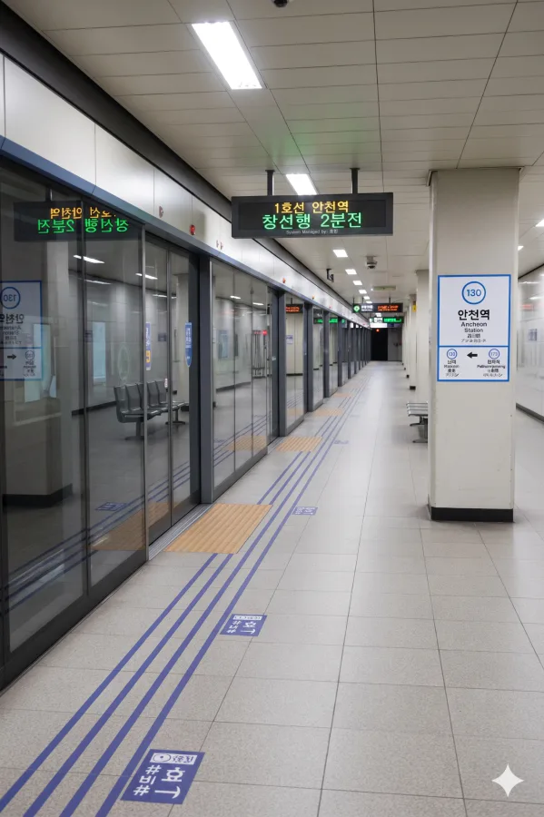
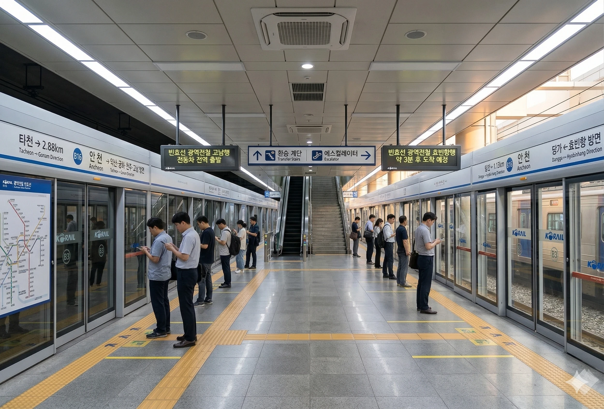

효빈 도시철도 1호선 130번 및 빈효선 광역전철 B16번. 효빈광역시 안천구 안천동 1031에 위치해 있다. 안천구의 핵심 환승역으로, 시내로 가는 1호선과 외곽으로 빠지는 빈효선 이용객이 뒤엉켜 출퇴근 시간 혼잡도가 매우 높다.
|
1
빈
안천역 출구 정보
|
||
|---|---|---|
| 번호 | 주요 시설 및 방향 | 비고 |
| 1 | 당가2동행정복지센터 | |
| 2 | 당가2동행정복지센터 | |
| 3 | 당가고, 능천중 | |
| 4 | 당가고, 능천중, 안천고, 유우초 | |
| 5 | 안천1동행정복지센터, 택소초, 신동초, 안천지하상가 진입로 (NC백화점 안천점 연결) | |
| 6 | 안천1동행정복지센터, 택소초, 신동초 | |
| 7 | 소유초등학교 | |
| 8 | 안천역 아파트 | |
※ 2면 3선 상대식 승강장 (중선 포함)

| 당안 ↑ | ||||
| 하행 | ㅣ | ㅣ | ㅣ | 상행 |
| ↓ 팔망성 | ||||
| 상행 | 1 효빈 도시철도 1호선 (완행/급행) | 곽암해수욕장 · 창선 방면 (급행 정차) |
| 하행 | 1 효빈 도시철도 1호선 (완행/급행) | 장선 방면 (급행 정차) |
※ 복선 섬식 승강장 (1면 2선)

| 당가 ↑ | |||
| ㅣ | 하행 | 상행 | ㅣ |
| ↓ 타천 | |||
| 상행 | 빈 빈효선 광역전철 (완행/급행) | 효빈항 방면 (급행 정차) |
| 하행 | 빈 빈효선 광역전철 (완행/급행) | 약산 · 궁하 · 천주 · 고남 방면 (급행 정차) |
| 안천역 이용객 통계 | ||||
|---|---|---|---|---|
| 연도 | 1 | 빈 | 합계 | 비고 |
| 2020년 | 32,326명 | 26,133명 | 58,459명 | |
| 2021년 | 33,326명 | 26,942명 | 60,268명 | |
| 2022년 | 34,357명 | 27,776명 | 62,133명 | |
| 2023년 | 37,755명 | 30,524명 | 68,279명 | |
| 2024년 | 37,382명 | 30,222명 | 67,604명 | |
| 구분 | 정류소명 | 노선 번호 |
|---|---|---|
| 순방향 | 안천역 | 2, 25, 34, 40, 47, 48, 151, 154, 471, 472, 481, 522, 842, 4000, 7000, 7777, 4004 |
| 역방향 | 안천역(건너편) | 02-1, 52, 43, 40-1, 47, 48, 151, 514, 471, 472, 481, 252, 482, 4000R, 7000R, 7777R, 4004R |
효빈광역시의 대표적인 '덕후 노믹스' 성지인 안천구 지하를 약 870m 길이로 잇는 대형 지하도상가. 효빈시설관리공단에서 관리하고 있다.
약 870m의 길이에 걸쳐 입점한 점포들은 '관문'이라는 특성에 맞게 여행과 서브컬처, 생활 상권이 기묘하게 혼합되어 있다.